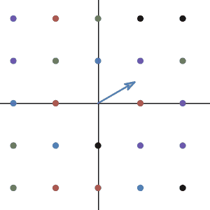
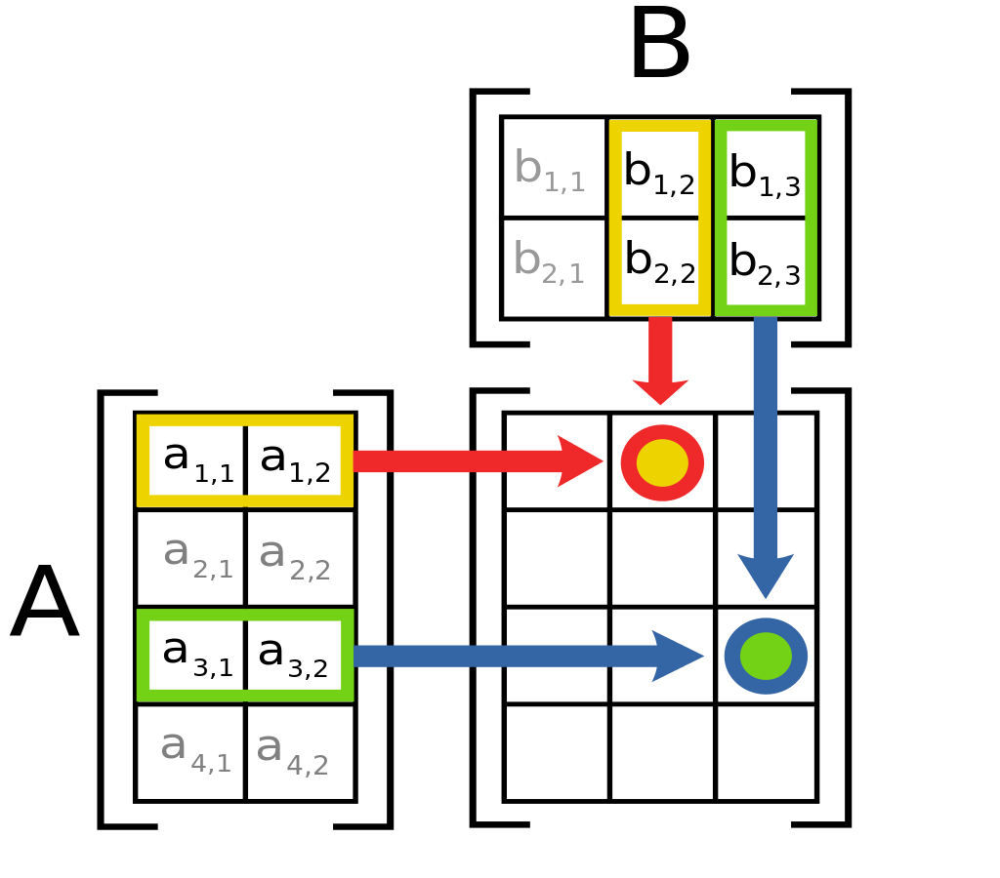

Unfortunately, no one can tell you what the Matrix is. You have to see it for yourself.
For most of us, the first time when we hear the word “Matrix” is from the movie Matrix. So, here I quote one of the character’s line in Matrix as the start of this chapter. To “see” what matrix really is, the knowledge of linear transformation is required. Good thing is, we have learned what linear transformation is, so now is time to find a way to describe the transformation numerically. Hopefully, we can all “see” it by the end of the section.
We knew that the linear transformation is the transformation between vector space, and vector space can be expressed as the span of the basis vector. So, to write down the linear transformation, we need to see how the basis vector changes under the transformation.
Let’s again take the example from the last section. The transformation of rotating 90 degrees counterclockwise. Remember last time we said the transformation act on the basis of space and change the basis to a new one:
Now let’s introduce a better way to write down the vector. For a vector lives in 2d, we usually write them from up to down and close it with a square bracket:
Then, to describe the transformation, we just need to write down the two basis vectors side by side (you will see real soon why we do this):
To see why this notation even makes sense, we will put this square thing next to a vector. Like functions, we can input a number and return another one, this transformation eats a vector and spit out another vector. In our case, the input vector is the vector before the transformation and the output is after.
So how did this calculating work? Let’s take a close look at each element.
The vector (1,0) has 1 as the x-component so the result has 1 portion of the first row(the new x basis). It also has 0 as its y-component so it has 0 portions of the second row(the new y basis). Notice this comes from the fact that the coefficients of linear combination don’t change during the transformation. If you have one \(\hat{x}\) and zero \(\hat{y}\), you remains one \(\hat{x}\) and zero \(\hat{y}\). The only thing that changes is the basis.

and as you see in the animation, the vector (1,0) indeed moves to (0,1).
So what if we want to transform something harder? let’s rotate the vector (a,b):

We can confirm this result is also true by looking at the animation.
As you already guessed it, the square thing is called matrix and this operation we did is called matrix multiplication.
Anyone who learned the matrix multiplication before might find this operation slightly different from the way you learned before because usually the matrix multiplication was introduced like this:

Don’t panic, you will soon find out the two ways are exactly the same. But imaging matrix multiplication as a linear transformation of vectors is much much more intuitive than pure algebra.
Can we figure out more things from the matrix multiplication we defined?
First is the dimension of the matrix. We can see that our transformation matrix has two rows and two columns, we call this matrix a 2 by 2 matrix or 2x2 matrix. In convention, we write the number of rows first and then the columns. So a 4 by 3 matrix will have 4 rows and 3 columns.
But why does our matrix has such a shape? Why not 10 by 10 or 20 by 20? The answer can be found from the dimension of the input vector and output vector. the transformation takes in a 2d vector and spits out another 2d vector so the dimension of the matrix has to be 2 by 2. If the transformation takes in a 3d vector and returns a 2d vector, then the dimension of this transformation matrix has to be 2 by 3.
There is also an interesting question to think about: Can any linear transformation be written as a matrix? If so, then any matrix with any dimension can be treated as a linear transformation.
Here is another thinking question: what if two matrices multiply each other? What is the result looks like? More importantly, what is the meaning of doing that?